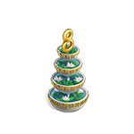

Получено: файл; исходный URL. Пиктограмма подписана в статье; файл скачан с moy.su по тому же пути, на который источник ссылается на zombicity.info. Побайтовая идентичность с исходным хостом не проверена. Страница: источник.
Весенний фонтан
историческая браузерная версия; площадка не установлена- Тип
- Постройка
- Версия и дата
- историческая браузерная версия; площадка не установлена
Данные по источнику · историческая браузерная игра, площадка не указана · 09.04.2013 — дата публикации; дата редакции неизвестна
Предварительно: Названия файлов и alt сохранены как подписи, не заменяют проверенную расшифровку пиктограмм; дата редакции и независимость сайтов неизвестны. Исторические значения требуют сверки.. Требуется сверка.
- Текст и пиктограммы источника
- [изображение: m_fountain.png] Доступен на: 1 ур Стоимость: 150 000 МОНЕТ Стадии строительства: 1. 010 [изображение: s_light.png] 2. 050 [изображение: s_light.png] 3. 200 [изображение: s_light.png] 4. 500 [изображение: s_light.png] 5. 1000 [изображение: s_light.png] После постройки Весенний Фонтан превращается в гору подарков.


Данные по источнику · историческая браузерная версия Зомби Ферма / Мания · 05.03.2013 — дата в адресе; дата редакции неизвестна
Предварительно: Историческая фанатская статья; данные на разных площадках и в разные периоды могут отличаться. Зависимость от ZF.3dn и ЗомбиСити не установлена.. Требуется сверка.
- Покупка и продажа
- По странице: 150 000 монет покупка, 1 500 монет продажа, 500 опыта за покупку.
- Стадии
- Свет: 10, 50, 200, 500, 1000; всего 1760.
- Взаимодействие
- Источник описывает помощь друзей: один Свет в сутки бесплатно, дополнительные — за зомбаксы; лимит 100 фонтанов друзей в день.
- Награды
- Перечислены возможные находки после превращения: коллекции, удобрения, материалы и другие предметы; вероятности не приведены.
Связанные сущности
нет проверенных связей — требуется сверка.